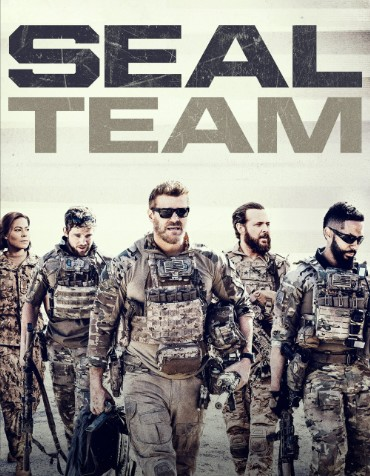

SEAL Team é uma série de televisão norte-americana lançada em 2017, que acompanha uma equipa de militares de elite durante missões perigosas.
A série combina ação, drama e momentos que mostram a importância da amizade e do trabalho em equipa.

Vê o trailar da série:
Ver informações sobre a série href="estilos.css">